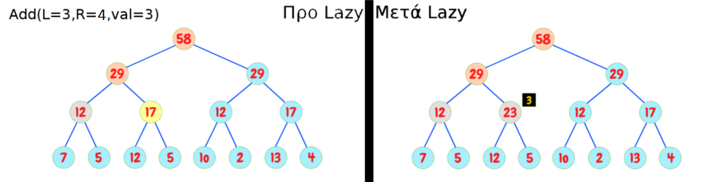
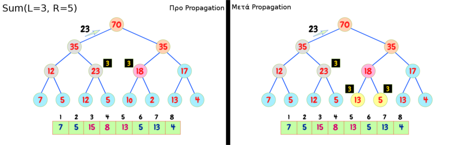

Copyright ©2018. All rights reserved. Created by CoDev
Είδαμε προηγουμένως πώς να απαντάμε σε ερωτήματα για ένα συνεχόμενο διάστημα και να ανανεώνουμε την τιμή ενός στοιχείου. Επόμενο είναι να φανταστούμε ότι με παρόμοιο τρόπο μπορούμε να ανανεώνουμε όλες τις τιμές σε ένα συνεχόμενο διάστημα. Πριν περάσουμε σε λεπτομέρειες, ας δούμε πώς μοιάζει το δέντρο μας μετά από μερικές ανανεώσεις: 
Η τεχνική Lazy Propagation στην ουσία δεν είναι τίποτα παραπάνω από τη χρήση post-it που μας θυμίζουν να κάνουμε την ανανέωση κάποια άλλη στιγμή.
Στο παραπάνω παράδειγμα βλέπουμε ότι πρέπει να ανανεωθούν τα δύο φύλλα 12-5 και να αποκτήσουν τις τιμές 15-8. Αντ' αυτού κολλάμε ένα post-it στον από πάνω τους κόμβο ώστε να μας θυμίσει να το κάνουμε αυτό αργότερα. Βασικό: Προφανώς αυτός ο κόμβος μπορεί να φανταστεί πόσο είναι το άθροισμά του (αυξάνεται κατά 6, αφού έχει δύο φύλλα από κάτω του και το καθένα θα έπρεπε να αυξηθεί κατά 3).
Καταλαβαίνουμε ότι κάθε κόμβος που έχει πρόγονο με post-it δεν περιέχει τη σωστή τιμή του, αφού δε γνωρίζει για αυτή την ανανέωση που γράφει το post-it. Πώς λοιπόν θα απαντήσουμε σωστά, αν έρθει ερώτημα που σχετίζεται με αυτό τον κόμβο;
Εδώ έρχεται να μας βοηθήσει η τεχνική Propagation. Κάθε φορά που αγγίζουμε έναν κόμβο με post-it (είτε σε ανανέωση είτε σε ερώτημα) προωθούμε το post-it του στα δύο παιδιά του, όπως φαίνεται παρακάτω:  Προφανώς δε χρειάζεται propagation όταν έχουμε φτάσει σε φύλλο!
Τι καταφέραμε με αυτό τον τρόπο; Σκεφτείτε ότι διασχίζουμε ένα απλό μονοπάτι από τη ρίζα προς κάποιον κόμβο (για την ακρίβεια αυτός είναι ο μόνος τρόπος να αγγίξουμε κάποιο κόμβο!). Λόγω του Propagation σε κάθε κόμβο, το μονοπάτι αυτό θα είναι καθαρό, χωρίς post-it. Άρα όποτε αγγίζουμε έναν κόμβο έχοντας ξεκινήσει από τη ρίζα, οι πρόγονοί του δεν έχουν post-it, κι άρα αυτός δίνει τη σωστή απάντηση.
Παρουσίαση εκτέλεσης δίνεται εδώ (θυμόμαστε αυτό). Ας τονίσουμε ότι αντί να διαλέγει σε ποιο παιδί θα κατέβει, πάει πάντα και στα 2, κι απλώς αν κάποιο είναι άσχετο, γυρνάει αμέσως. Μη σας μπερδέψει η διαφορετική υλοποίηση, θα μπορούσε να γίνει και με το γνωστό μας τρόπο. Επιπλέον, όπως ξαναείπαμε, λανθασμένα οι διαφάνειες αναφέρουν Segment Tree. Μάθετέ το κι έτσι για να μπορείτε να βρίσκετε πηγές!
Οι χρόνοι παραμένουν O(logN) και για ερώτημα και για update. Ο λόγος είναι απλός. Αρκεί να προσέξουμε ότι όταν κάνουμε update σε κάποιο διάστημα, οι κόμβοι που διαπερνούμε είναι ακριβώς οι ίδιοι που θα διαπερνούσαμε αν κάναμε ερώτημα για εκείνο το διάστημα. Απλώς, αντί να επιστρέφουμε απάντηση, τοποθετούμε post-it.
Για να καταλάβουμε καλύτερα τη δομή, μπορούμε να πειραματιστούμε με αυτή την εφαρμογή.
Στο επόμενο υποκεφάλαιο παρουσιάζονται διάφορα tricks που συχνά χρησιμοποιούμε μαζί με τα Leaf-Oriented BSTs.
Θα δούμε μόνο εφαρμογές του Lazy-Propagation, καθώς το βασικό είναι να μάθετε να το γράφετε άψογα. Από εκεί και πέρα εμφανίζεται σαν υποπρόβλημα σε πολλά προβλήματα, κι όλη η ομορφιά είναι να αναλύσετε έτσι το πρόβλημα που να εμφανιστεί μόνο του, χωρίς να το βιάσετε.